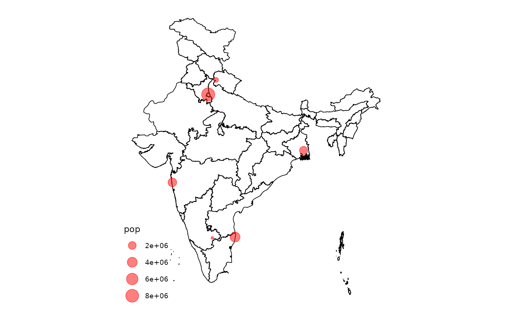

Converting a spatial object of map coordinates will allow those points to line up with the regular mapindia plot by applying the same World Geodetic System 1984 projection to those points as well.
The input `data` is assumed to contain longitude and latitude coordinates by default. If this is not the case, provide an [sf::st_crs] object to the `crs` parameter with the appropriate coordinate reference system.
Usage
mapindia_transform(data, ...)
# S3 method for class 'sf'
mapindia_transform(data, ...)
# S3 method for class 'data.frame'
mapindia_transform(data, ..., input_names = c("lon", "lat"))Arguments
- data
A data frame containing coordinates in a two column format where the first column represents longitude and the second data frame represents latitude. The names of the data frame column do not matter, just that the order of the columns is kept intact.
- ...
Additional parameters passed onto [sf::st_as_sf]. By default, `crs = sf::st_crs(4326)` is used, implying longitude and latitude coordinates.
- input_names
A character vector of length two which specifies the longitude and latitude columns of the input data (the ones that should be transformed), respectively. Only required if the input data is a `data.frame` object. Defaults to `c("lon", "lat")`.
Value
An `sf` object containing the transformed coordinates from the input data frame with the World Geodetic System 1984 projection applied. The transformed columns will be appended to the data frame so that all original columns should remain intact.
Examples
data <- data.frame(
lon = c(77.10, 88.36, 80.27, 72.87, 77.59, 78.03),
lat = c(28.71, 22.57, 13.08, 19.07, 12.97, 30.31),
pop = c(8398748, 2325502, 3990456, 2705994, 32113, 347397)
)
# Transform data
transformed_data <- mapindia_transform(data)
# Plot transformed data on map
library(ggplot2)
plot_map() + geom_sf(
data = transformed_data,
aes(size = pop),
color = "red", alpha = 0.5
)
